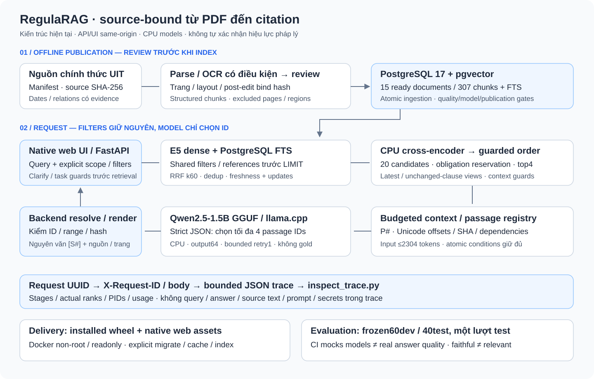

RegulaRAG / local research demo
Hỏi quy định.
Đối chiếu từ nguồn.
Tra cứu quy định UIT bằng tiếng Việt: đọc cả điều kiện, phiên bản và đoạn bằng chứng đứng sau citation.
Bài toán
PDF native/scan, điều khoản phân tán và văn bản sửa đổi: tìm đúng con số vẫn có thể bỏ sót điều kiện áp dụng.
Phạm vi đã kiểm
15 ready documents / 307 chunks. Source SHA, page/layout review và provenance. 45 trang excluded; pháp lý hiện hành chưa xác minh.
FastAPI + native UILocal CPU modelsBackend-bound citations
Video có chú thích, không voice-over. Ba truy vấn live development; benchmark M4 trình bày riêng.
Điểm khác biệt / kiểm chứng được
LLM chọn đoạn. Backend dựng citation.
Source-bound từ ingestion
- SHA / trang / offsets / quality gate.
- Filter và relation/latest witnesses.
- Không tự approve OCR confidence.
Contract ở output
- Qwen chọn strict JSON passage IDs.
- Backend kiểm hash, range, dependencies.
- Nguyên văn [S#] + nguồn, trang PDF.
Live demo: hè 12 tín chỉ → mở nguồn; hè + sĩ số 70; văn bản 99999 không có trong corpus.
Kiến trúc hiện tại / không frontend server riêng
Từ approved PDF đến evidence-first UI

M4 / frozen100 / một lượt test sau release freeze
Nguồn đúng ≠ trả lời đúng task
| Metric | Development 60 | Held-out 40 |
|---|---|---|
| Đúng đủ ý, câu có đáp án | 47/47 | 19/28 · 67.86% |
| Task-support citation blocks | 60/60 | 29/108 · 26.85% |
| Source-faithful quote blocks | 60/60 | 108/108 |
| Đúng từ chối / clarification axes | 8/8 · 12/12 | 0/7 · 0/20 |
| End-to-end p50 / p95 | 12.351 / 15.824 s | 21.552 / 32.707 s |
Windows CPU, concurrency1, mixed cold/warm, no warmup, model reload. Review bởi assistant; không independent/blind/document-disjoint. Video Linux demo không là benchmark mới.
API spend 0 VND; local compute/điện chưa định giá. Quality targets và p95<10s chưa đạt.
Trade-offs / bước tiếp theo
Giữ bằng chứng. Giữ cả thất bại.
Ba quyết định
- PostgreSQL + pgvector/FTS: data/filter nhất quán.
- Selector + bound quotes: fidelity, chưa entailment.
- Small CPU models/CE: quality đổi lấy latency/reload.
Failure thật chưa sửa
T24–T30: 7/7 unsupported vẫn trả quote thật. Lexical contracts chưa general answerability. Còn multi-obligation và personal clarification failures.
Test40 đã exposed; iteration tiếp cần development/evidence mới + test độc lập mới.
README/runbook · Methodology + failures · Deep dive 15–20 phút / CV